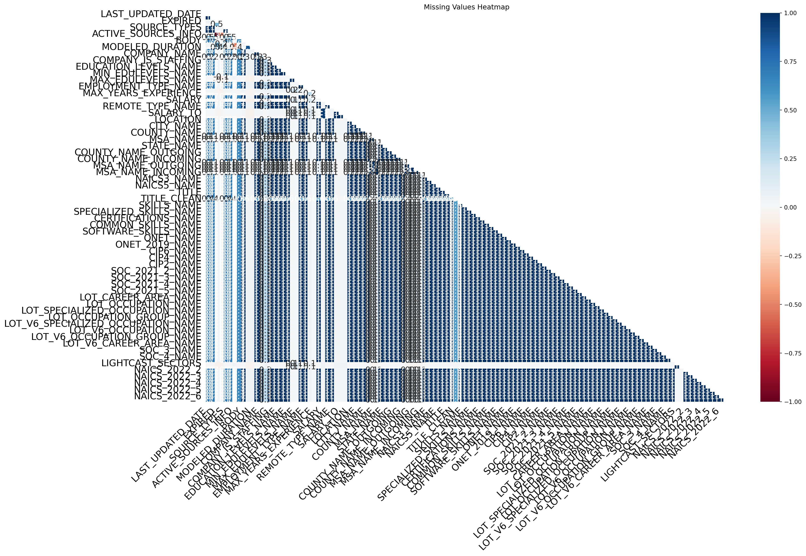
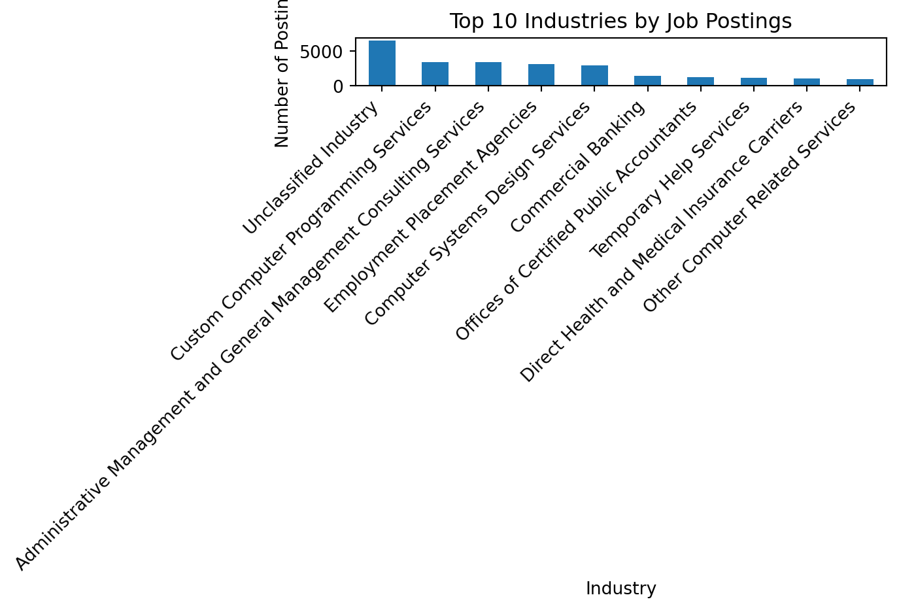
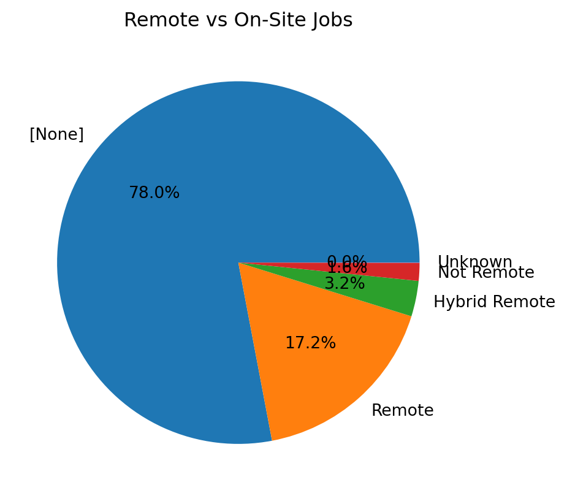

import pandas as pd
import numpy as np
import matplotlib.pyplot as plt
import seaborn as sns
import missingno as msnoData Analysis
Comprehensive Data Cleaning & Exploratory Analysis of Job Market Trends
1 Overview
This page documents the data cleaning and exploratory analysis for our project on salary disparities and AI-driven job trends. We focus on preparing the dataset for analysis and identifying key patterns in job postings, salary distributions, and work arrangements.
2 Load Packages and Data
df = pd.read_csv("data/sample_jobs.csv", low_memory=False)
df.head()| ID | LAST_UPDATED_DATE | LAST_UPDATED_TIMESTAMP | DUPLICATES | POSTED | EXPIRED | DURATION | SOURCE_TYPES | SOURCES | URL | ... | NAICS_2022_2 | NAICS_2022_2_NAME | NAICS_2022_3 | NAICS_2022_3_NAME | NAICS_2022_4 | NAICS_2022_4_NAME | NAICS_2022_5 | NAICS_2022_5_NAME | NAICS_2022_6 | NAICS_2022_6_NAME | |
|---|---|---|---|---|---|---|---|---|---|---|---|---|---|---|---|---|---|---|---|---|---|
| 0 | 1f57d95acf4dc67ed2819eb12f049f6a5c11782c | 9/6/2024 | 2024-09-06 20:32:57.352 Z | 0.0 | 6/2/2024 | 6/8/2024 | 6.0 | [\n "Company"\n] | [\n "brassring.com"\n] | [\n "https://sjobs.brassring.com/TGnewUI/Sear... | ... | 44.0 | Retail Trade | 441.0 | Motor Vehicle and Parts Dealers | 4413.0 | Automotive Parts, Accessories, and Tire Retailers | 44133.0 | Automotive Parts and Accessories Retailers | 441330.0 | Automotive Parts and Accessories Retailers |
| 1 | 0cb072af26757b6c4ea9464472a50a443af681ac | 8/2/2024 | 2024-08-02 17:08:58.838 Z | 0.0 | 6/2/2024 | 8/1/2024 | NaN | [\n "Job Board"\n] | [\n "maine.gov"\n] | [\n "https://joblink.maine.gov/jobs/1085740"\n] | ... | 56.0 | Administrative and Support and Waste Managemen... | 561.0 | Administrative and Support Services | 5613.0 | Employment Services | 56132.0 | Temporary Help Services | 561320.0 | Temporary Help Services |
| 2 | 85318b12b3331fa490d32ad014379df01855c557 | 9/6/2024 | 2024-09-06 20:32:57.352 Z | 1.0 | 6/2/2024 | 7/7/2024 | 35.0 | [\n "Job Board"\n] | [\n "dejobs.org"\n] | [\n "https://dejobs.org/dallas-tx/data-analys... | ... | 52.0 | Finance and Insurance | 524.0 | Insurance Carriers and Related Activities | 5242.0 | Agencies, Brokerages, and Other Insurance Rela... | 52429.0 | Other Insurance Related Activities | 524291.0 | Claims Adjusting |
| 3 | 1b5c3941e54a1889ef4f8ae55b401a550708a310 | 9/6/2024 | 2024-09-06 20:32:57.352 Z | 1.0 | 6/2/2024 | 7/20/2024 | 48.0 | [\n "Job Board"\n] | [\n "disabledperson.com",\n "dejobs.org"\n] | [\n "https://www.disabledperson.com/jobs/5948... | ... | 52.0 | Finance and Insurance | 522.0 | Credit Intermediation and Related Activities | 5221.0 | Depository Credit Intermediation | 52211.0 | Commercial Banking | 522110.0 | Commercial Banking |
| 4 | cb5ca25f02bdf25c13edfede7931508bfd9e858f | 6/19/2024 | 2024-06-19 07:00:00.000 Z | 0.0 | 6/2/2024 | 6/17/2024 | 15.0 | [\n "FreeJobBoard"\n] | [\n "craigslist.org"\n] | [\n "https://modesto.craigslist.org/sls/77475... | ... | 99.0 | Unclassified Industry | 999.0 | Unclassified Industry | 9999.0 | Unclassified Industry | 99999.0 | Unclassified Industry | 999999.0 | Unclassified Industry |
5 rows × 131 columns
df.columns.tolist()['ID',
'LAST_UPDATED_DATE',
'LAST_UPDATED_TIMESTAMP',
'DUPLICATES',
'POSTED',
'EXPIRED',
'DURATION',
'SOURCE_TYPES',
'SOURCES',
'URL',
'ACTIVE_URLS',
'ACTIVE_SOURCES_INFO',
'TITLE_RAW',
'BODY',
'MODELED_EXPIRED',
'MODELED_DURATION',
'COMPANY',
'COMPANY_NAME',
'COMPANY_RAW',
'COMPANY_IS_STAFFING',
'EDUCATION_LEVELS',
'EDUCATION_LEVELS_NAME',
'MIN_EDULEVELS',
'MIN_EDULEVELS_NAME',
'MAX_EDULEVELS',
'MAX_EDULEVELS_NAME',
'EMPLOYMENT_TYPE',
'EMPLOYMENT_TYPE_NAME',
'MIN_YEARS_EXPERIENCE',
'MAX_YEARS_EXPERIENCE',
'IS_INTERNSHIP',
'SALARY',
'REMOTE_TYPE',
'REMOTE_TYPE_NAME',
'ORIGINAL_PAY_PERIOD',
'SALARY_TO',
'SALARY_FROM',
'LOCATION',
'CITY',
'CITY_NAME',
'COUNTY',
'COUNTY_NAME',
'MSA',
'MSA_NAME',
'STATE',
'STATE_NAME',
'COUNTY_OUTGOING',
'COUNTY_NAME_OUTGOING',
'COUNTY_INCOMING',
'COUNTY_NAME_INCOMING',
'MSA_OUTGOING',
'MSA_NAME_OUTGOING',
'MSA_INCOMING',
'MSA_NAME_INCOMING',
'NAICS2',
'NAICS2_NAME',
'NAICS3',
'NAICS3_NAME',
'NAICS4',
'NAICS4_NAME',
'NAICS5',
'NAICS5_NAME',
'NAICS6',
'NAICS6_NAME',
'TITLE',
'TITLE_NAME',
'TITLE_CLEAN',
'SKILLS',
'SKILLS_NAME',
'SPECIALIZED_SKILLS',
'SPECIALIZED_SKILLS_NAME',
'CERTIFICATIONS',
'CERTIFICATIONS_NAME',
'COMMON_SKILLS',
'COMMON_SKILLS_NAME',
'SOFTWARE_SKILLS',
'SOFTWARE_SKILLS_NAME',
'ONET',
'ONET_NAME',
'ONET_2019',
'ONET_2019_NAME',
'CIP6',
'CIP6_NAME',
'CIP4',
'CIP4_NAME',
'CIP2',
'CIP2_NAME',
'SOC_2021_2',
'SOC_2021_2_NAME',
'SOC_2021_3',
'SOC_2021_3_NAME',
'SOC_2021_4',
'SOC_2021_4_NAME',
'SOC_2021_5',
'SOC_2021_5_NAME',
'LOT_CAREER_AREA',
'LOT_CAREER_AREA_NAME',
'LOT_OCCUPATION',
'LOT_OCCUPATION_NAME',
'LOT_SPECIALIZED_OCCUPATION',
'LOT_SPECIALIZED_OCCUPATION_NAME',
'LOT_OCCUPATION_GROUP',
'LOT_OCCUPATION_GROUP_NAME',
'LOT_V6_SPECIALIZED_OCCUPATION',
'LOT_V6_SPECIALIZED_OCCUPATION_NAME',
'LOT_V6_OCCUPATION',
'LOT_V6_OCCUPATION_NAME',
'LOT_V6_OCCUPATION_GROUP',
'LOT_V6_OCCUPATION_GROUP_NAME',
'LOT_V6_CAREER_AREA',
'LOT_V6_CAREER_AREA_NAME',
'SOC_2',
'SOC_2_NAME',
'SOC_3',
'SOC_3_NAME',
'SOC_4',
'SOC_4_NAME',
'SOC_5',
'SOC_5_NAME',
'LIGHTCAST_SECTORS',
'LIGHTCAST_SECTORS_NAME',
'NAICS_2022_2',
'NAICS_2022_2_NAME',
'NAICS_2022_3',
'NAICS_2022_3_NAME',
'NAICS_2022_4',
'NAICS_2022_4_NAME',
'NAICS_2022_5',
'NAICS_2022_5_NAME',
'NAICS_2022_6',
'NAICS_2022_6_NAME']This dataset contains job posting information that can be used to study salary trends, hiring patterns, and work arrangements. Before analysis, we inspected the number of rows and columns and reviewed the variable names to understand what cleaning would be needed.
3 Data Cleaning and Preprocessing
This section explains how the dataset was cleaned, including removing unnecessary columns, handling missing values, converting data types, and eliminating duplicate records.
4 Drop Unnecessary Columns
We removed tracking fields and redundant classification variables where present so that the dataset is easier to interpret and use for analysis.
columns_to_drop = [
"ID", "URL", "ACTIVE_URLS", "DUPLICATES", "LAST_UPDATED_TIMESTAMP",
"NAICS2", "NAICS3", "NAICS4", "NAICS5", "NAICS6",
"SOC_2", "SOC_3", "SOC_5"
]
df = df.drop(columns=[c for c in columns_to_drop if c in df.columns])
df.shape(50000, 118)5 Handle Missing Values
We examined missing values to better understand data quality. Numerical columns were filled with the median, categorical columns were filled with “Unknown”, and columns with more than 50% missing values were removed.
missing_pct = df.isnull().mean().sort_values(ascending=False) * 100
missing_pct.head(15)
msno.heatmap(df)
plt.title("Missing Values Heatmap")
plt.show()
df = df.dropna(thresh=len(df) * 0.5, axis=1)
for col in df.select_dtypes(include="number"):
df[col] = df[col].fillna(df[col].median())
for col in df.select_dtypes(exclude="number"):
df[col] = df[col].fillna("Unknown")
This approach preserves as much of the dataset as possible while making the data usable for analysis.
6 Convert Data Types
We converted posting dates to datetime format so that date fields would be interpreted correctly.
if "POSTED" in df.columns:
df["POSTED"] = pd.to_datetime(df["POSTED"], errors="coerce")
if "LAST_UPDATED_DATE" in df.columns:
df["LAST_UPDATED_DATE"] = pd.to_datetime(df["LAST_UPDATED_DATE"], errors="coerce")7 Remove Duplicates
Duplicate job postings can inflate counts and distort patterns. To prevent double counting, we removed duplicate rows.
before_rows = len(df)
df = df.drop_duplicates()
after_rows = len(df)
print("Rows before removing duplicates:", before_rows)
print("Rows after removing duplicates:", after_rows)
print("Duplicates removed:", before_rows - after_rows)Rows before removing duplicates: 50000
Rows after removing duplicates: 49986
Duplicates removed: 148 Outlier Detection and Removal
possible_salary_cols = [
"Salary", "SALARY", "salary", "annual_salary", "Yearly Salary",
"SALARY_FROM", "SALARY_TO"
]
salary_col = None
for col in possible_salary_cols:
if col in df.columns:
salary_col = col
break
print("Salary column being used:", salary_col)Salary column being used: Noneif salary_col is not None:
df[salary_col] = pd.to_numeric(df[salary_col], errors="coerce")
df = df.dropna(subset=[salary_col])
q1 = df[salary_col].quantile(0.25)
q3 = df[salary_col].quantile(0.75)
iqr = q3 - q1
lower = q1 - 1.5 * iqr
upper = q3 + 1.5 * iqr
df = df[(df[salary_col] >= lower) & (df[salary_col] <= upper)]
df.shape(49986, 108)if salary_col is not None:
df[salary_col] = pd.to_numeric(df[salary_col], errors="coerce")
df = df.dropna(subset=[salary_col])
q1 = df[salary_col].quantile(0.25)
q3 = df[salary_col].quantile(0.75)
iqr = q3 - q1
lower = q1 - 1.5 * iqr
upper = q3 + 1.5 * iqr
df = df[(df[salary_col] >= lower) & (df[salary_col] <= upper)]
df.shape(49986, 108)This helps reduce the influence of unusually large or small salary values that may reflect rare cases or data-entry problems.
9 Exploratory Data Analysis
This section examines salary trends, industry patterns, and work arrangements to better understand labor market differences.
10 Visualization 1: Job Postings by Industry
This chart shows which industries appear most often in the sample and helps identify where job demand is concentrated.
possible_industry_cols = [
"Industry", "INDUSTRY", "industry", "NAICS_2022_6_NAME", "NAICS_2022_3_NAME"
]
industry_col = None
for col in possible_industry_cols:
if col in df.columns:
industry_col = col
break
print("Industry column being used:", industry_col)Industry column being used: NAICS_2022_6_NAMEif industry_col is not None:
df[industry_col].value_counts().head(10).plot(kind="bar")
plt.title("Top 10 Industries by Job Postings")
plt.xlabel("Industry")
plt.ylabel("Number of Postings")
plt.xticks(rotation=45, ha="right")
plt.tight_layout()
plt.show()
The chart highlights the industries with the greatest concentration of postings in the dataset.
11 Visualization 2: Salary Distribution
This histogram shows how salaries are distributed across the sample and helps reveal whether pay is tightly clustered or widely spread.
if salary_col is not None:
plt.figure(figsize=(8, 5))
sns.histplot(df[salary_col], bins=30)
plt.title("Salary Distribution")
plt.xlabel("Salary")
plt.ylabel("Count")
plt.tight_layout()
plt.show()A wide distribution suggests substantial variation in compensation across postings.
12 Visualization 3: Remote vs. On-Site Jobs
This chart shows the share of remote, hybrid, and on-site roles in the dataset.
possible_remote_cols = ["REMOTE_TYPE_NAME", "remote_type", "REMOTE", "work_type"]
remote_col = None
for col in possible_remote_cols:
if col in df.columns:
remote_col = col
break
print("Remote column being used:", remote_col)Remote column being used: REMOTE_TYPE_NAMEif remote_col is not None:
df[remote_col].value_counts().plot(kind="pie", autopct="%1.1f%%")
plt.title("Remote vs On-Site Jobs")
plt.ylabel("")
plt.show()
This is useful because work arrangement is an important factor for students and job seekers.
13 Visualization 4: AI vs. Non-AI Roles
Because our project focuses on AI-related job trends, we classified postings as AI-related or non-AI-related based on keywords in the job title.
possible_title_cols = ["TITLE", "Title", "title", "JOB_TITLE"]
title_col = None
for col in possible_title_cols:
if col in df.columns:
title_col = col
break
print("Title column being used:", title_col)Title column being used: TITLEif title_col is not None:
df["ai_flag"] = df[title_col].astype(str).str.contains(
"AI|Artificial Intelligence|Machine Learning|ML|Data Science|Data Scientist",
case=False,
na=False
)
else:
df["ai_flag"] = False
df["ai_flag"].value_counts(dropna=False)ai_flag
False 49986
Name: count, dtype: int64if salary_col is not None and "ai_flag" in df.columns:
plt.figure(figsize=(8, 5))
sns.boxplot(data=df, x="ai_flag", y=salary_col)
plt.title("Salary Comparison: AI-Related vs Non-AI Roles")
plt.xlabel("AI-Related Role")
plt.ylabel("Salary")
plt.tight_layout()
plt.show()This comparison helps us evaluate whether AI-related roles appear to command different salary levels than non-AI roles.
14 Key Findings
The data cleaning process improved the usability of the dataset by removing redundant columns, handling missing values, converting date fields, and eliminating duplicate records. The exploratory analysis suggests that job postings are concentrated in a limited number of industries and that salary levels vary meaningfully across the sample. Remote and hybrid roles represent an important share of postings, which may influence how students approach their job search. The AI versus non-AI comparison is especially relevant to our project because it helps evaluate whether AI-related skills are associated with different compensation patterns.